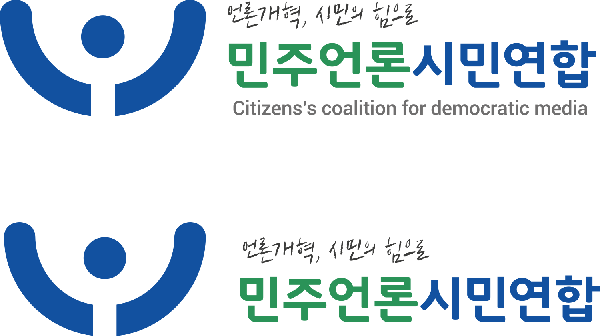

민주언론시민연합
Citizens’s coalition for democratic media
민주언론시민연합의 브랜드를 새로 구축하여새로운 CI를 리디자인하였다
| PERSONAL PROJECT | DATE |
| Rebranding | 2013. 11. |
| Graphic Design |
01.
The Brief
민주언론시민연합(Citizens’s coalition for democratic media)은 언론민주화를 모토로한 대한민국의 NGO(Non-Governmental Organization)단체이다. '언론개혁, 시민의힘으로'라는 슬로건으로 언론의 자유와 민족의 공동체적 삶의 가치구현에 앞장서 사회발전에 이바지함을 목적으로 한다.
02.
Insperation
03.
Brand Guideline
1) Symbol Mark
2) Structure
3) Variation
4) Color
5) Font
04.
Stationary